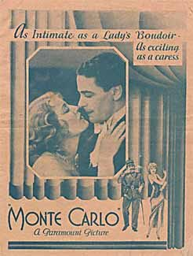

Monte Carlo

Starring: Jack Buchanan, Jeanette MacDonald, Claud Allister
Director: Ernst Lubitsch
Writer: Ernest Vajda
Producer: Ernst Lubitsch
Monte Carlo is a 1930 American pre-Code musical comedy film, directed by Ernst Lubitsch. It co-stars Jack Buchanan as a French Count Rudolph Falliere masquerading as a hairdresser and Jeanette MacDonald as Countess Helene Mara.
Watch Online: Internet Archive
Previous Showings
11 Runs • 7 Festivals
Original Billings: 2 runs (May 21, 1926 - October 5, 1930)
Original Run: May 21 - 22, 1926 (Friday - Saturday)
All runs on record (11):
- May 21 - 22, 1926 (Friday - Saturday)Lew Cody, Gertrude Olmsted
- October 5, 1930 (Sunday - Tuesday)Jeanette MacDonald, Jack Buchanan
- February 5 - 9, 1988w/ Love Me Tonight
- February 13 - 14, 1992w/ Design for Living
- November 11 - 13, 1998Romantic Comedy Seriesw/ Trouble in Paradise
- February 22 - 23, 2001Hollywood Musicals, 1929-1939w/ The Smiling Lieutenant
- February 24 - 25, 2007Film Noir, Val Lewton, 1930s musicals and more!w/ The Devil Is a Woman
- May 14 - 16, 2011Musicalsw/ The Band Wagon
- March 25 - 26, 2015Cary Grant, plus Ernst Lubitsch and Rouben Mamoulianw/ City Streets
- February 11 - 12, 2017British and Lubitschw/ The Love Parade
- April 17 - 18, 2025Lubitsch, Mamoulian, Sternberg Three Great Directorsw/ The Love Parade